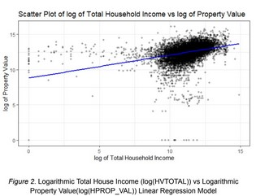
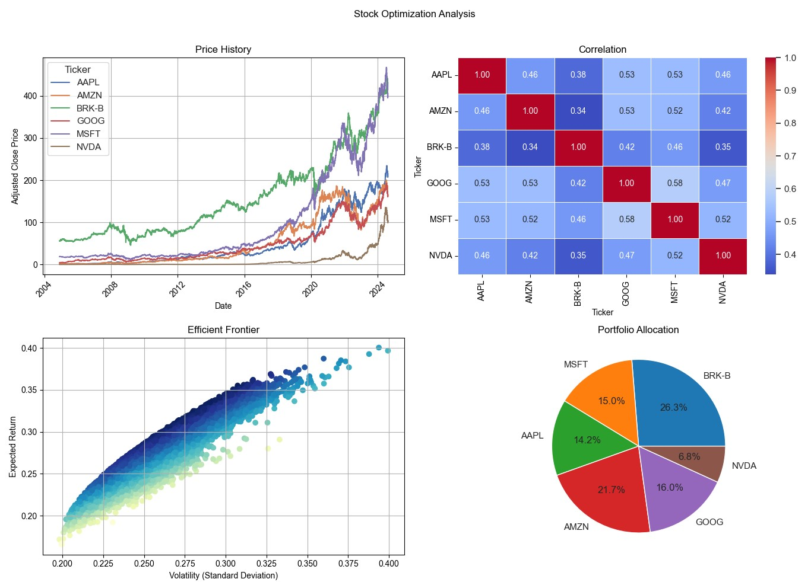
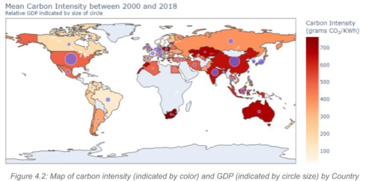

Hi👋, I'm Daniel Brown
A Data Scientist combining statistical reasoning with computational engineering to solve complex problems. Currently pursuing my Master's in Data Science at UC Berkeley while working as a Systems Engineer at L3Harris.
Check out my work 👨🔧
🧾Statistics
Bivariate Relationship between Household Income and Property Value
Analyzed the relationship between total household income and property value in the U.S. using data from the 2023 Annual Social and Economic Supplement (ASEC). My group and I used linear regression models, including logarithmic transformations and an indicator for households receiving social security, to explore this relationship and found a statistically significant but modest association.
View Project🧮Data Science
Investigation into Portfolio Diversification using Python
Analyzed trends in price history, correlation, and volatility to compute the expected return for a high risk individual stock portfolio and low risk index portfolio. Data used was stock price over the last 20 years. Used yfinance API to pull stock data, cleaned the dataframe using python, and visualized trends using Matplotlib.
View Project🧮Data Science
Exploring the State of World Energy Economics using Python
Explored the relationships between a country's economic strength, reliance on fossil fuels, and adoption of renewable energy, with the aim of understanding global energy production and consumption behaviors. The study employs a dataset of global energy consumption and economic indicators, analyzing correlations between GDP, electricity demand, energy efficiency, and the shift from fossil fuels to renewable energy across various countries.
View Project🔧Mechanical Engineering
A 3D printed Embouchure-Assistive Device for Musicians with Facial Palsy
Developed a novel 3D-printed embouchure-assistive device designed for saxophone players with facial palsy, which affects the facial muscles and can hinder their ability to play. The device was tested and showed significant improvements in note sustain, air pressure within the mouthpiece, and overall comfort and tone quality. The design iterations of the prototype are also included as a potential template for broader applications in musicians with facial palsy.
View Project🔧Mechanical Engineering
Computational Fluid Dynamics - Determining the Effect of Particle Dispersion of an Infected Individual with COVID-19 in the Classroom Setting
Leveraged Computational Fluid Dynamics (CFD) to analyze how COVID-19 transmission is influenced by various factors within mechanically ventilated buildings at UC San Diego. Specifically, I investigated how room geometry, temperature, and the location of an infected student affect particle movement and airflow of the virus within Pepper Canyon Hall.
View Project